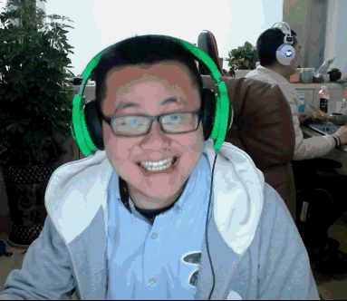

"艺术"是什么？
"艺术"是人们精神生活的缺失，导致了互联网例如抖音、快手一系列亚文化的崛起，自己也是亚文化的一种。
并不是自己多么强的能力，而是大家在没有爱好、没有精神生活的今天，需要一个魔幻、疯狂的发泄口。
"艺术"是平庸，是生活，是埋葬于人们心底的丑陋，是生命不可承受之痛。

"艺术"是你，是我，其实"艺术"是这世间的每一个人。
世间根本就没有"艺术"，又或者人人都是"艺术"。
现实世界中每个人其实或多或少的都在表演"艺术"，每个人都扮演着不同的角色。